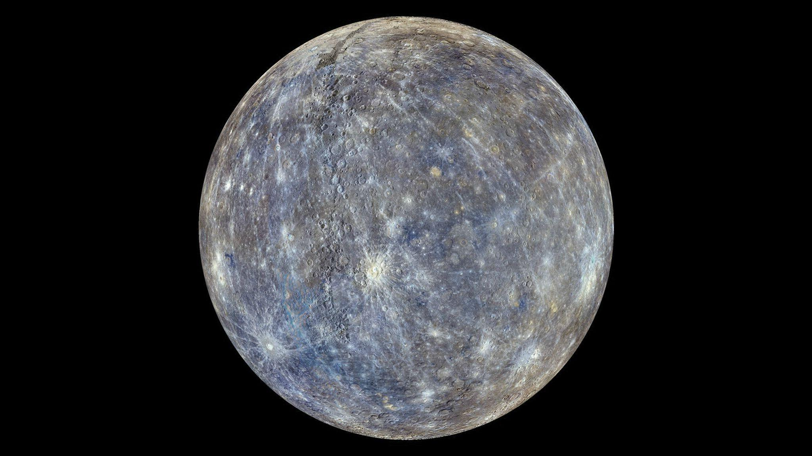

نظرة عامة
عطارد هو أقرب كوكب إلى الشمس وأصغر كوكب في النظام الشمسي. يتميز بسطحه المغطى بالفوهات وحرارته المرتفعة.
خصائص عطارد
- القطر: حوالي 4,880 كم
- درجة الحرارة: تصل إلى 430 درجة مئوية نهارًا
- مدة اليوم: حوالي 59 يوم أرضي
- مدة السنة: حوالي 88 يوم أرضي
معرض الصور

صورة لسطح عطارد المليء بالفوهات.